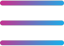

<ion-header>
  <ion-navbar>

    <ion-buttons start *ngIf="auth?.isUserLoggedIn();">
      <button style="min-width: unset;" ion-button menuToggle>
        <!-- <ion-icon class="icon-theme" name="md-menu"></ion-icon> -->
         
      </button>
    </ion-buttons>

    <ion-buttons end>
      <!-- <header-icon></header-icon> -->
      <button (click)="openfilter()" class="filerIconBtn" ion-button clear icon-only color="light">
        <!--  -->
        <ion-icon color="light" name="search"></ion-icon>
      </button>
      <!-- <button (click)="openNoti()" class="filerIconBtn" ion-button clear icon-only color="light">
        <ion-icon name="notifications" class="icon-theme" color="light"></ion-icon>
        <ion-badge class="bad" no-margin item-end *ngIf="auth.unread_noti<99 && auth.unread_noti!=0">
          {{auth.unread_noti}}</ion-badge>
        <ion-badge class="bad" no-margin item-end *ngIf="auth.unread_noti>99">
          99+</ion-badge>
      </button> -->
      <!-- <button (click)="openNoti()" style="width: 30px;min-width: unset;" ion-button>
        <ion-icon style="font-size: 32px;" class="icon-theme" name="md-notifications"></ion-icon>
        <ion-badge class="bad" no-margin item-end *ngIf="auth.unread_noti<99 && auth.unread_noti!=0">
          {{auth.unread_noti}}</ion-badge>
        <ion-badge class="bad" no-margin item-end *ngIf="auth.unread_noti>99">
          {{auth.unread_noti}}</ion-badge>
      </button> -->
      <!-- <button (click)="openNoti()" style="width: 40px;min-width: unset;background: white;height: auto;margin: 0;" ion-button>
        <ion-icon style="font-size: 32px;" class="icon-theme" name="notifications"></ion-icon>
        <ion-badge class="bad" no-margin item-end *ngIf="auth.unread_noti<99 && auth.unread_noti!=0">
          {{auth.unread_noti}}</ion-badge>
        <ion-badge class="bad" no-margin item-end *ngIf="auth.unread_noti>99">
          99+</ion-badge>
      </button> -->

      <header-icon></header-icon>

    </ion-buttons>
    <ion-title>{{'INFLUENCERS' | translate}}</ion-title>
  </ion-navbar>

</ion-header>

<ion-content>

  <ion-refresher (ionRefresh)="doRefresh($event)">
    <ion-refresher-content>

    </ion-refresher-content>
  </ion-refresher>
  <div *ngIf="topInflu.length>0">
    <h3 class="heading">{{'TOP_INFLUENCERS' | translate}}</h3>
    <div class="flex_contain" (scroll)="horiscroll($event)">
      <div (click)="profile(item.id)" class="bx_box" *ngFor="let item of topInflu" routerLink="/topic-select">
        
        <p text-nowrap>{{item.first_name}}&nbsp;{{item.last_name}}</p>
      </div>
      <div routerLink="/topic-select" *ngIf="showSpinner" class="bx_box">
        <ion-spinner style="position:absolute; right:42px; top:65px"></ion-spinner>
      </div>

    </div>
  </div>

  <div class="noDatadiv" *ngIf="noData">
    <ion-icon name="ios-search-outline"></ion-icon>
    <p>{{'NO_DATA_FOUND' | translate}}</p>
  </div>

  <div *ngIf="services" [virtualScroll]="services">
    <div *virtualItem="let k" (click)="profile(k.created_by.id,k.Id)" class="feed">
      <post [k]='k'>
      </post>
    </div>
  </div>
  <div *ngIf="noMoreRecords" text-center padding>
    <ion-note>{{'NO_MORE_RECORDS' | translate}}</ion-note>
  </div>
  <ion-infinite-scroll no-padding (ionInfinite)="doInfinite($event)">
    <ion-infinite-scroll-content loadingSpinner="bubbles" loadingText="{{'LOADING' | translate}}...">
    </ion-infinite-scroll-content>
  </ion-infinite-scroll>
</ion-content>